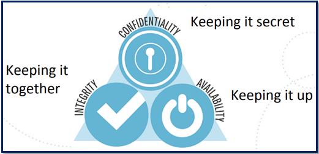
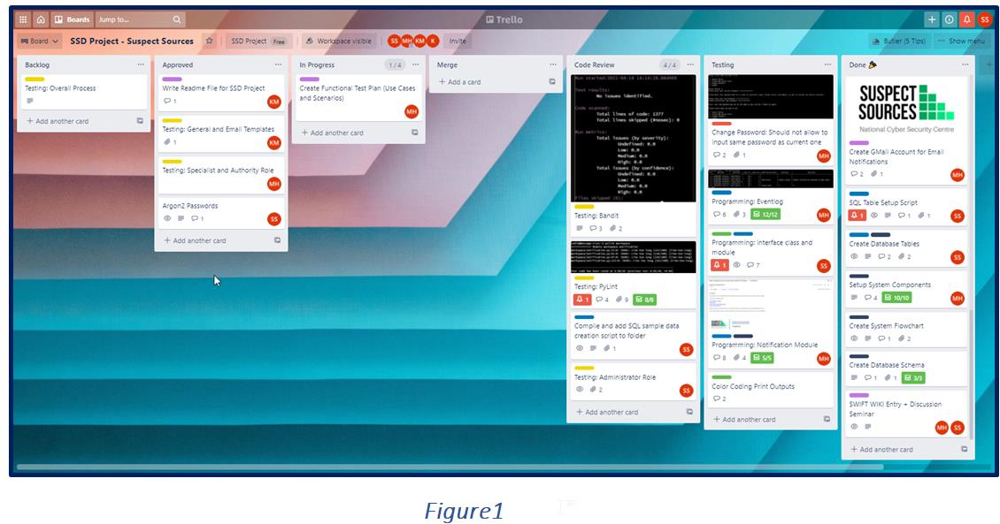
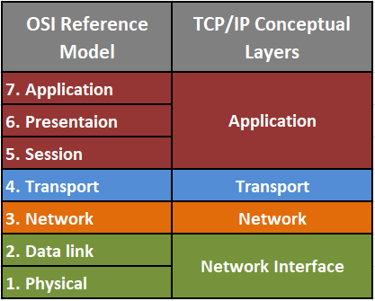
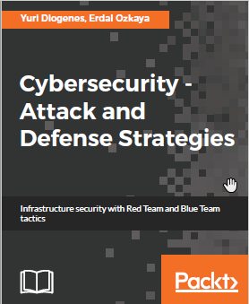
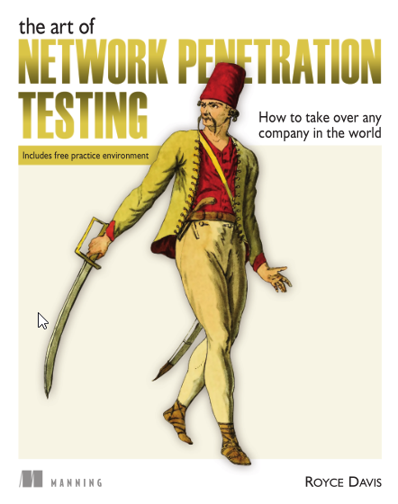
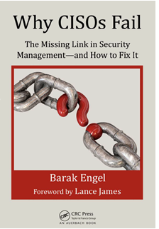

Network & Information Security Management (NISM)
Key Study Objectives
- Manage security risks and vulnerabilities in IT network systems through appropriate diagnosis analysis and application of correct methodologies, tools, and techniques.
- Synthesising multiple information sources (internet security alerts & warning sites) for systematic analysis of security breaches and issues.
- Understand the legal, social, ethical side of information security issues and critically appraise programs that could aid in managing the risk.

- Not understanding the importance of code review, which aid in finding bugs, enforcing a common code style, while improving the quality of the codebase.
- Further, no code review process limited the ability to increase team quality through knowledge sharing and curtailed the team’s capability to respond to emergent tasks.
- No documentation process for the codebase, causing code readability and reusability issues.
- Project execution without a formal process and standard practice led to an ad hoc development approach, causing disastrous outputs with overcomplicated design, inaccurate risk assessment, insufficient testing, and subjective progress assessment. This resulted in time wastage; squander productivity and demoralised developers leaving the company.
- Further, the lack of coding standards harmed the query performances causing issues in server performances. As an Infrastructure specialist, I spent most times restarting the servers and ended up expanding the hardware capacity thinking it was an issue in the infrastructure. Now, I understand what went wrong, and can see it as a spiral effect of lack of coding standards.
Cyber Security is a Board-level Problem: Over the last few years, continuously evolving technology has become one of the greatest challenges facing cybersecurity as clearly reflected in figure 1. As the same as technological innovation, methods used by cybercriminals has also evolved. Therefore, it is often difficult to know which methods are being used by cybercriminals in an attack. For organisations to safeguard themselves, it is vital to upgrade their security measures at a similar phase.
Figure 1 (Source: New York Times, Forbes, The Guardian, Tech Radar, BBC, PC Mag – McCandless & Evans, 2021)
Organisations can make use of skilled ethical hackers to effectively identify and upgrade areas in their systems that are particularly vulnerable to modern hacking techniques. As a more comprehensive scanning of vulnerabilities, penetration tests pave the way to build a roadmap of improvements for any organisation, highlighting where its security needs to adjust to the desired level of risk. Penetration testing takes advantage of the known and unknown vulnerabilities while exploiting the human aspects of cybersecurity (Korpela, 2016).
Therefore, performing penetration tests are crucial for avoiding really bad news as a data breach, while ensuring cybersecurity is not the blocker for organisational activities, but preferably helping to get a realistic insight into the attack surface of a given application, system, or infrastructure.
Basically, it is going Back to the Basics of CIA Triad (figure 2), answering “it is possible to compromise our IT infrastructure maliciously to attain entry to unauthorised sensitive data or take over our systems for malicious purposes?” as an organisation that is prepared to face the evolving digital environment and everything that comes with it — including the ever-present dangers (Akridge,2020).

Figure 2: CIA Triad (Source: OWASP Toronto – Chen, 2018)
So, what does it mean in the technological field that is agile and evolving rapidly? In an era of digital transformation, cloud computing, and a sophisticated threat landscape, regulators and investors are putting organisations under pressure to rethink how organisational functions have organised to identify risks to their business and manage them within an agreed risk appetite and threat landscape.
As a result, Boards of Directors have a responsibility to take a more active role to manage cyber risks as a principle business risk, collectively owned and managed by the organisation. As cyberattacks could impact an organisation's finance, customers, business model and brand name, engaging cybersecurity more closely during business planning is crucial as integrated risk governance.
Then UK Information Commissioner, Elizabeth Denham said ‘Cybersecurity is not an IT issue, it is a boardroom issue. Companies must be diligent and vigilant. They must do this not only because it is their duty under law, but because they have a duty to their customers’ as her concise appraisal of business’ responsibility when it comes to cybersecurity (Financier Worldwide, 2017).
The explosion of connectivity across the globe opens up new ways for organisations for customer growth and products expansion. However, such opportunities come with recommend regulations and international standards as evolving customer data and intellectual property become new targets for information theft, which directly impact enterprise performances and shareholder value. For example, UK NIS Regulations 2018 12(2)(c) outlines ‘process for regular testing of the effectiveness of security measures, such as by way of vulnerability scanning and penetration testing and then acting upon the results of such testing’ as obligations for relevant digital service providers (RDSPs) (Information Commissioner's Office, 2021b).
However, navigating the world of conflicting rules, cross-jurisdictional issues, and different compliance is not a simple task and is a matter of significant revenue to companies when it comes to penalties. For example, though NIS concerns digital data, it is also possible that the same incident may also be a personal data breach (as per the UK GDPR). In such circumstances, it is important to notify both NIS competent authority and ICO (Information Commissioner's Office, 2021a). Another classic example would be the application of GDPR to Financial services firms. The Financial Conduct Authority (FCA) highlights GDPR compliance as a board-level responsibility, where it is crucial to have evidence demonstrating the steps that Financial services firms have taken to comply while treating customers fairly central to both GDPR and the FCA’s rules (FCA, 2018).
Considerably, information classification involving taking an inventory of information assets that organization stores and processes and identifying the sensitivity of that information for categorisation are a critical part of information security compliance management programme (Brodin, 2019).
Going back to my experiences (in my previous workplace), as the Infrastructure team lead, I failed to see the importance of comprehensive scanning of vulnerabilities when the ERP project of moving to the Cloud initially in 2017 connecting four global locations.
At that time, transitioning or implementing workloads into the Cloud without a strong strategy to manage cyber risks or non-compliance with regulatory requirements, have never occurred to us as vulnerabilities that could lead to negative implications on the organisation. Surprisingly this was not even highlighted in our annual IT Audit, so the topic of cybersecurity never reached the top-management level.
Through my current learnings, I understand that although, Cloud adoption means innovation, agility, speed of execution, the context of security has changed. In the Cloud, not all security and compliance controls are inherited or automatic, and lack of clarity in accountability across the value chain makes the Cloud security everyone’s responsibility as stated in figure3.
Figure 3: Cloud security is everyone’s responsibility (Source: Deloitte, 2021)
So, what I now realised as key cybersecurity measures:
✓It is important to prepare for the worse and act now
Source: OWASP Toronto – Chen, 2018
Based on my learning, if I think aloud, I could also realise IT management issues regard to not escalating concerns over limited resources and expertise. I see the issue because of a political dilemma of aligning with the business stakeholders/top management who were focused on core business operations.
Although earlier researches discussed the management issues of software development, real-world drama around the political dilemma in striking the balance between Business-focus vs Secure-focus Software Development has not been an investigative discussion point in academic research.
GDPR and overlap of jurisdiction: I realised points as to why careful consideration need to ensure that correct policies and procedures are in place to avoid any conflicts with legislation during the implementation of data privacy in software development.
Right to information and right to privacy intend to help the individual making all types of organisations accountable; however, uncertainty regarding the relationship between the GDPR and other laws causes conflict between determining the applicability of the legislation on the data subject (Thompson, 2017).
Organisations must take steps to implement all relevant regulations, where they can and mitigate risks where they are unable. For example, compare GDPR with other legislation and create a matrix of the organisational responsibilities under these laws (i.e. Data Act in Dutch Police – Wpg).
As GDPR affects international businesses offering services to EU markets or employing EU workers (Kruger, 2020); the lack of clarity between the GDPR and other international laws presents a dilemma. Inevitable litigation issues and conflicts associated with complying with cross-border data protection laws threaten exports of data-based services from developing countries and question the applicability of each legislation.
Such circumstances demand mechanisms to limit conflicts through an application of a one-size-fits-all policy for data protection.
Unearthing performances through familiarity and unfamiliarity:The experiences we gained during the last team project as members have paid during our current projects as familiarity helps to increase the likelihood of integrating knowledge at ease to come with coherent solutions.
However, prior knowledge of learning who has what information could bring positive contributions only if you do not have members who are constantly at odds with one another.
It might be that familiarity benefit trumped by the fresh perspectives that come from adding new faces to the team, which also limits the unfortunate event of being with members who have drastically different personalities and philosophies, which can lead to infighting.
Indeed, taking advantage of both known and fresh perspectives, we have decided to have rotational leadership during our meetings, and it offers each of us a chance to practice the handling of expressiveness, assertiveness, and flexibility.
Regarding project management in the coding section, we have used Trello as a tool to ensure all tasks were allocated without losing any details. The task allocation was based on the competencies of each member as well as their willingness to work hard to achieve the project goals. During our regular meetings, the tool was used to track our progress and to decide the next action to be taken. Figure 1 explains how we worked on the tool.

Reference List:
Ahmad, M (2010) Management issues in software development. Available from:https://www.researchgate.net/publication/234778069_Management_issues_in_software_development [Accessed 25 March 2021].
Kruger, T. (2020) The Data Protection Conflict: The EU General Data Protection Regulation 2016 and India’s Personal Data Protection Bill 2019. Available from:https://conflictoflaws.net/2020/the-data-protection-conflict-the-eu-general-data-protection-regulation-2016-and-indias-personal-data-protection-bill-2019/ [Accessed 25 March 2021].
Mattoo, A. & Meltzer, J. (May 23, 2018) Resolving the conflict between privacy and digital trade. Voxeu. Available from:https://voxeu.org/article/resolving-conflict-between-privacy-and-digital-trade [Accessed 26 March 2021].
Politie (2019) Privacy Statement. Available from https://www.politie.nl/algemeen/privacy.html?sid=228463d3-72e3-4434-8947-933a8e3d3756 [Accessed 20 March 2021].
Thompson, B. (November 16, 2017) GDPR: Crackdowns and conflict on personal privacy. Financial Times. Available from: https://www.ft.com/content/8e502b6e-794d-11e7-a3e8-60495fe6ca71 [Accessed 1 April 2021].
Group 02 – Team members (Kalina, Marzio, Sebastian, Shoumik)
Seminar 01: STRIDE and DREAD tools
During this seminar, we will use the Microsoft STRIDE & DREAD tools (discussed in the lecturecast and in Meier, J., Mackman, A., Dunner, M., Vasireddy, S., Escamilla, R. and Murukan, A. (2003). Threat Modelling.).
Read the paper and review the lecturecast, and then based on your response in Collaborative Learning Discussion 1, answer the questions below:
View research paper: "Compromising a Medical Mannequin"
- Use a 3 level DREAD rating where 0 = no risk and 3 = maximum risk.
- Which is the risk with the highest rating? What assumptions have you made?
View Proposed: "DREAD Threat Analysis"
Seminar 02: TCP/IP v ISO/OSI
History of TCP/IP
The TCP/IP model was a successor of an older project by the US Department of Defense (DoD) called Advanced Research Projects Agency NETwork (ARPANET). ARPA was later called Defense Advanced Research Projects Agency (DARPA). ARPANET was a communications network that is designed to survive the loss of communication subnet such that the communication continues as long as the source and destination of the conversation exist. This project first saw the daylight in 1969. When new communication technologies evolved, such as the wireless technologies, the need for a newer model evolved. ARPANET was then developed to the TCP/IP model. Although the first definition of the TCP/IP model was introduced in [1] in 1974, ARPANET did not completely adopt it until 1983. Starting from that year, the ARPANET was gradually called the Internet. The TCP/IP model took its name from the two essential protocols that create together the backbone of the model. Unlike the OSI model which was created as a model so that protocols are developed based on it, the TCP/IP model was based on protocols that already existed, or earlier versions of them existed. This gives more flexibility to the OSI model over the TCP/IP. Still, the TCP/IP was world widely adopted because the ARPANET was already there and the ARPANET adopted it. Despite that, studying the OSI model gives a very educational insight about the way networks operate, or should we say, inter-operate. The TCP/IP was widely spread for a various number of reasons, beside the fact that it was already there. The hardware and software independency, the large and flexible addressing scheme, and free availability and public documentation of the standards were also important reasons that lead to the wide adoption of the TCP/IP standard
What is TCP/IP Model?
TCP/IP helps you to determine how a specific computer should be connected to the internet and how you can transmit data between them. It helps you to create a virtual network when multiple computer networks are connected together. TCP/IP stands for Transmission Control Protocol/ Internet Protocol. It is specifically designed as a model to offer highly reliable and end-to-end byte stream over an unreliable internetwork.

History of OSI Model
The OSI model was officially adapted as a standard by ISO in 1979. Some might say that it is an old standard. Well, it is old. What kept this model alive for so long is its capacity of expansion to meet the evolving needs. Most of the work that created the base for the OSI model was done by a group at Honeywell Information Systems. The head of this group was Mike Canepa. This group started addressing the lack of standardization problem in the mid 1970s of the past century and they came up with a proposal named Distributed Systems Architecture, DSA. By that time, the British Standards Institute submitted a proposal to the ISO saying that there is a need for unified standard communication architecture for distributed processing systems. Responding to this proposal, the ISO formed a subcommittee on Open System Interconnection. The ISO also made American National Standards Institution (ANSI) in-charge of preparing proposals prior to the first official meeting of the subcommittee. Canepa’s group participated in the ANSI meetings to discuss their seven-layer proposal. Later, ANSI chose to provide Canepa’s proposal as the only one to be submitted to the ISO subcommittee.
In March 1978, the first meeting of the subcommittee was made and Canepa and his team presented their proposal there. The ISO group thought that this proposal covered most of the needs for Open System Interconnection. In the same month that year a provisional version of the model was published. With some minor improvements, the next version of the model was published in June 1979 and was standardized. In 1995 the OSI model was revised to cover the needs arising by the rapid development in the field of computer networks
OSI (Open Systems Interconnection)
Open Systems Interconnection (OSI), a standard model for network communications, allows dissimilar networks to communicate. OSI describes how data and network information are communicated from one computer to another computer. Each layer communicates with the same layer’s software or hardware on other computers. Data is encapsulated with the necessary protocol information as it moves down the layers before network transit.
Key Differences between OSI Model and TCP/IP Model
Reference list
Davosnetworks (n.d.) Insecure Deserialization #8 – OWASP Top 10 Vulnerabilities 2020. Available from: https://www.davosnetworks.com/insecure-deserialization-owasp-top-10-vulnerabilities-2020 Accessed 18 March 2020].
Matthew (2021) OWASP Top 10 Cheat Sheet. Available from: https://blog.sqreen.com/owasp-top-10-cheat-sheet-startup-ctos/ [Accessed 18 March 2020].
Khunphet, P. (2019) Insecure Deserialization. Available from: https://medium.com/blog-blog/insecure-deserialization-e5398e83defe [Accessed 18 March 2020].
OWASP (2017) OWASP Top 10 – 2017 The Ten Most Critical Web Application Security Risks. Available from: https://owasp.org/www-pdf-archive/OWASP_Top_10-2017_%28en%29.pdf.pdf [Accessed 18 March 2020].
Vojtko, M. (2020) Keep Your Site Safe with the OWASP Top 10 List. Available from: https://www.thesslstore.com/blog/keep-your-site-safe-with-the-owasp-top-10-list/ [Accessed 18 March 2020].
Yadav, R. (2018) Advances in Cyber Security. International Journal of Engineering Research & Technology 7(3): 117-120. Available from: https://www.ijert.org/research/advances-in-cyber-security-IJERTV7IS030091.pdf [Accessed 18 March 2020].
Seminar 03: Evaluation exercise
Read the blog post in preparation for this week’s seminar - “Geer, D. (2015) 8 Penetration Testing Tools That Will Do the Job. (Network World)"
- Evaluate the tools discussed therein against the criteria: ease of install, ease of use, flexibility, licensing, privacy, reputation.
- Rate each tool on a scale of 1-5, 5 being the most popular/ highest score.
- Which tool gets the highest rating according to your evaluation?
Group 02 – Team members (Kalina, Marzio, Sebastian, Shoumik)
Team Assignment Topic:
This assignment has two component parts, the team submission and your individual peer assessment. All components must be submitted by end of unit 6.As part of the assessment, you have created a website that is the target for Penetration Testing by a different group (a pen-test team). Before starting on the assessments for this module, you will need to assign a business function to your website/web application which will help decide what regulations and standards are applicable to your site.
You should classify your website as one of the following:
- An industry recruitment site that is used to allow candidates to register themselves on job vacancy sites.
- An e-health site that is used to provide registrants with medical and fitness information and advice, supplied by medical professionals.
- An e-commerce site used to provide payment services and advice for commercial website operators.
You are NOT required to add this functionality to your website but you should inform your pen-test team of the business purpose of your website. Hence, each team performing the testing should use this information to influence the type of testing they carry out.
In summary, website creators must :
- choose one of the three stated business categories for their website, and
- advise the pen-test team of the category of their website.
The pen-test team has to evaluate the website provided by the development team, who will provide the URL, IP address and agree access times. The pen-test team will need to produce a report that has:
- details of possible security vulnerabilities,
- a list of standards appropriate to their business and any non-compliance against those standards, and
- a summary of recommendations and potential mitigations that could be used to ameliorate any risks and comply with given standards and guidelines for the specified industry. These should be ordered by importance.
These conclusions will be presented in an executive summary in Unit 11.
Part 1: A design document/proposal of a Network and Information Security Management (NISM) Assessment Project.
For this this first assessment, your team (the pen-test team) will need to produce a design document/proposal that promotes the benefit of what you will be doing for the business. This assignment counts towards 20% of the overall module mark.
Only one submission is required from each team with a limit of 2 pages. Nominate one member of your team to submit on the team's behalf. The word count is 1,000 words.
Assignment Guidance,
Your document should show your clients:
- How you will identify, investigate and classify their security challenges.
- A list of the tools you will use, justifications for why you selected the tools.
- The methodology you will use.
- A list of any (potential) impacts on normal operations caused by using the tools.
- A list of assumptions and limitations of the tools and outputs produced.
- A timeline for the completion of your task.
Checklist for the assignment:
- List of security challenges (generic plus ones specific to the business).
- Tools you will use (plus justifications, match them against challenges).
- Methodology (remote or local, automated or manual, etc.)
- Business impacts on use of tools and methods (scanning in or out of hours, traffic).
- Timeline of the completion of the task.
- Limitations and assumptions.
- Applicable citations and references.
As a team, we decided to commence with the "An e-health site that is used to provide registrants with medical and fitness information and advice, supplied by medical professionals."
Part 2: An Executive Summary of a Network and Information Security Management (NISM) Assessment Project.
Your team should now produce an executive summary that pulls together your findings, recommendations and conclusions in a clear and unambiguous format. It should consist of:
- A brief summary of the work carried out.
- Summary findings – presented in an easy to understand, non-technical manner (supported by graphics and charts as appropriate).
- A section that evaluates the website against two security standards – one of which must be the GDPR directive.
- Conclusions – with justifications.
- Recommendations – with justifications, ordered by business priority.
Note that the executive summary should organise any recommendations in order of the priority to the business’ commercial needs. The organisation is particularly interested in how well they meet current security standards (including the new GDPR directive) and expect to see any mitigations required to meet such standards clearly called out as important business requirements.
Word count for the executive summary is 2,000 words.
Checklist for the assignment:
- List of security issues found.
- Methodology used, (with limitations).
- Summary of data (graphical where possible)
- Comparison against a security standard, plus an evaluation of how well the business meets its GDPR requirements.
- Summary of conclusions (based on/ linked back to data).
- Summary of recommendations (in descending order, based on risk).
- Applicable citations and references.
Only one submission is required from each team. Nominate one person to submit the assignment on behalf of the team.
Tutor Feedback Comments:
Design Document
Knowledge: Excellent initial report. A good demonstration of knowledge and understanding.
Application of Knowledge: Excellent demonstration of the application of knowledge - particularly strong around the choice of tools and methodologies and assumptions.
Criticality: Good use of references to support the review of the methodologies and tools - good justification of the eventual selection.
Structure and Presentation: Excellent presentation, well structured, very good use of diagrams to illustrate points and explanations.
Graded by:Doug Millward
Graded on: June 2021
Executive Summary
Web Application Security Exploitation and Countermeasures for Modern Web Applications - Andrew Hoffman

Cybersecurity Attack and Defense Strategies : Yuri Diogenes, Erdal Ozkaya
Infrastructure security with red team and blue team tactics

The Art of Network Penetration Testing: ROYCE DAVIS
How to take over any company in the world

Web Penetration Testing with Kali Linux Second Edition : Juned Ahmed Ansari
Build your defense against web attacks with Kali Linux 2.0
Why CISOs Fail The Missing Link in Security Management and How to Fix It : Barak Engel
Do these people even know what they are doing?

CISO MindMap 2021: What do InfoSec professionals really do? : Rafeeq U. Rehman
CISO Mind Map and Vulnerability Management Maturity Model : SANS